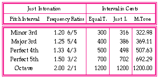

Although we concerned ourselves with microtones in this system, the possibilities to have some music consonance in the translation from the Latin text to the music were favorable. By "consonance" we mean any pair of frequencies whose ratio is a ratio of whole numbers (every interval that is contained in the major or minor triad and its inversions is a consonance; all other intervals are dissonances). The consonances therefore naturally sound pleasing to the ear when played together, such as the Perfect 5th (3/2), or Major 3rd (5/4). The examples examined are the first phrase from the third movement "Alleluia. Laudate Dominum in sanctis eius." Since we were dealing with text, the example illustrates the intervals for the five vowels. Please note that the step numbers described in the tables below are referring to the microtone table in Example 1. Example 5 is a comparison (in cents) of three different tunings: Equal Temperament, Just, and Microtone (26). We can see that the microtone tuning ratios are relatively comparable to the others.
Example 5: Comparison table.
